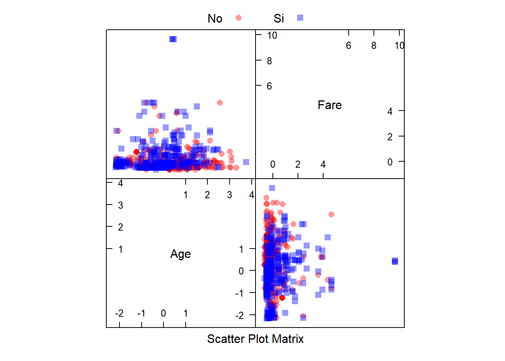

9 K vecinos más próximos (KNN)
La regresión de K veinos más próximos (KNN por sus siglas en inglés) es un método no paramétrico que, de manera intuitiva, aproxima la asociación entre las variables independientes y el resultado continuo promediando las observaciones en la misma vecindad. El usuario debe establecer el número de vecinos o puede elegirlo mediante validación cruzada (lo veremos más adelante) para seleccionar el tamaño que minimiza el error cuadrático medio.
Si bien el método es bastante atractivo, rápidamente se vuelve poco práctico cuando aumenta la dimensión, es decir, cuando hay muchas variables independientes.
Los métodos del vecino más cercano proporcionan una forma bastante diferente de construir clasificadores y tienen fortalezas (supuestos mínimos, límites de decisión flexibles) y debilidades (carga computacional, falta de interpretabilidad) en comparación con los modelos de regresión logística.
En principio, la idea es sencilla. Recordemos que el conjunto de entrenamiento tendrá tanto predictores \(X\) como una variable resultado \(Y\) mientras que el conjunto de prueba sólo tendrá valores de \(X\) conocidos. Ambos conjunto de datos son necesarios.
Comenzamos eligiendo un número entero positivo \(k\) que especificará el número de vecinos que se utilizarán en la clasificación. Para clasificar un punto \(x\) en el conjunto test, se buscarán los \(k\) puntos más cercanos en el conjunto de entrenamiento, y se elige la clase que tenga la representación más alta entre los \(k\) puntos. De aquí que el algoritmo se llame KNN (“k vecinos más cercanos”).

Algoritmo KNN
Por ejemplo, supongamos que \(k=10\) y los 10 vecinos más cercanos a \(x\) tienen clases 1,1,3,2,3,3,3,2,3,2. Como hay cinco 3, tres 2 y dos 1, el punto \(x\) se asigna a la clase 3. Supongamos que para otro \(x\) los 10 vecinos más cercanos tienen clases 1,1,1,2,3,1,3,3,3,2. En este caso hay cuatro 1s y cuatro 3s, por lo que hay un empate en el liderato. El algoritmo vecino más cercano elegirá entre 1 y 3 al azar.
Aunque, en principio, KNN es sencillo, surgen algunos problemas. Primero, ¿cómo deberíamos elegir \(k\)? No hay una respuesta fácil, pero puede ayudar pensar en los valores extremos para \(k\). Podemos seleccionar \(k\) lo mas grande posible. Por ejemplo, supongamos que el conjunto de entrenamiento tiene 10 observaciones, con clases 1,1,1,2,2,2,3,3,3,3. Para cualquier punto del conjunto de prueba, \(k=10\) los vecinos más cercanos incluirán TODOS los puntos del conjunto de entrenamiento y, por lo tanto, cada punto del conjunto de prueba se clasificará en la clase 3. Este clasificador tiene una varianza baja (cero), pero probablemente un sesgo alto.
Si seleccionamos \(k\) lo mas pequeño posible, estaríamos en el caso \(k=1\). En este caso, cada punto del conjunto de prueba se coloca en la misma clase que su vecino más cercano en el conjunto de entrenamiento. Esto puede conducir a un clasificador de alta varianza y muy irregular, pero el sesgo tenderá a ser pequeño.
Un segundo tema que es relativamente fácil de abordar se refiere a las escalas en las que se miden los valores de \(x\). Si por ejemplo una variable \(x\) tienen un rango de 2 a 4, mientras que otra tiene un rango de 2000 a 4000, la distancia estará dominada por la segunda variable. La solución que se suele utilizar es normalizar todas las variables (cambiar su escala para que su media sea 0 y su desviación estándar sea 1).
Existen muchas liberías para llevar a cabo KNN. Nosotros usaremos la libería class para ilustrar el ejemplo de cáncer de mama visto anteriormente y para el que ya hemos normalizado nuestros predictores.
library(class)
# para asegurarnos que usamos knn de class
fit.knn <- class::knn(train=select(breast_train_prep, !diagnosis),
test=select(breast_test_prep, !diagnosis),
cl=breast_train_prep$diagnosis,
k=10, prob=TRUE)
head(fit.knn)[1] M M M M M M
Levels: B MLa probabilidad que cada individuo de la muestra test pertenezca al grupo asignado la podemos obtener con
prob <- attr(fit.knn, "prob")
head(prob)[1] 1.0 1.0 1.0 0.6 0.7 1.0A continuación podemos crear un gráfico. Esto es algo complejo, ya que queremos representar los datos de la muestra test coloreados por la clase a la que fueron asignados por el clasificador kNN (como fondo de la imagen) con los datos de entrenamiento (usando un símbolo diferente) y el límite de decisión. Este gráfico sólo lo podemos hacer para dos variables predictoras. Por ejemplo symmetry_worst y texture_se.
plot.df <- breast_test_prep %>%
select(symmetry_worst, texture_se ) %>%
mutate(predicted = as.factor(fit.knn))
# Usamos un 'convex hull' para determinar los puntos que determinan los límites
# de cada cluster
plot.df1 <- data.frame(x = plot.df$symmetry_worst,
y = plot.df$texture_se,
predicted = plot.df$predicted)
find_hull <- function(df) df[chull(df$x, df$y), ]
boundary <- plyr::ddply(plot.df1, .variables = "predicted", .fun = find_hull)
ggplot(plot.df1, aes(x, y, color = predicted, fill = predicted)) +
geom_point(size = 3) +
geom_polygon(data = boundary, aes(x,y), alpha = 0.5) +
xlab("symmetry_worst") + ylab("texture_se")
Podemos ver la matriz de confusión
tt <- table(predict=fit.knn, Actual=breast_test_prep$diagnosis)
tt Actual
predict B M
B 105 9
M 2 54y la precisión es
sum(diag(tt)/sum(tt))[1] 0.9352941Podemos repetir los mismos cálculos para \(k=15\)
fit.knn2 <- class::knn(train=select(breast_train_prep, !diagnosis),
test=select(breast_test_prep, !diagnosis),
cl=breast_train_prep$diagnosis,
k=10)
fit.knn [1] M M M M M M B B M M M B B M B B M B B M B M M B M B B B B B B M B B M M B B
[39] B B B B B B M M B B M B B M B B M B M M B B M M B M B B M B B M B M M M M B
[77] B B M B B B M B B B B B B B B B B M M B M M M B B B B M B B B B B B B M B B
[115] B B B B B B B B M B B B B M B M M B B B M B M B B B B B B B M M B B B M B B
[153] B B B M B B B B B B B B B B M M M B
attr(,"prob")
[1] 1.0 1.0 1.0 0.6 0.7 1.0 0.5 1.0 1.0 0.9 0.6 1.0 1.0 1.0 1.0 1.0 0.9 1.0 0.6
[20] 1.0 1.0 1.0 0.8 0.8 0.5 1.0 1.0 0.6 1.0 1.0 0.9 0.9 0.6 1.0 0.8 0.8 0.8 1.0
[39] 1.0 1.0 1.0 1.0 0.6 1.0 1.0 1.0 0.9 1.0 1.0 0.7 1.0 1.0 1.0 1.0 0.8 1.0 0.9
[58] 0.9 1.0 0.6 0.7 1.0 0.7 1.0 0.5 1.0 1.0 1.0 0.8 1.0 0.7 1.0 1.0 1.0 1.0 1.0
[77] 1.0 0.9 0.5 1.0 1.0 0.9 0.5 1.0 0.6 1.0 1.0 1.0 1.0 0.9 1.0 1.0 0.7 0.7 0.7
[96] 1.0 0.9 1.0 1.0 0.9 0.9 1.0 1.0 1.0 1.0 1.0 1.0 0.8 1.0 1.0 1.0 1.0 1.0 1.0
[115] 1.0 1.0 1.0 0.9 1.0 0.7 1.0 1.0 1.0 0.8 1.0 0.8 1.0 0.6 1.0 1.0 0.9 0.8 0.7
[134] 0.9 1.0 1.0 0.5 0.9 1.0 0.8 1.0 0.9 1.0 0.6 0.9 1.0 0.9 0.9 1.0 0.9 1.0 0.9
[153] 1.0 1.0 1.0 1.0 1.0 1.0 1.0 0.7 1.0 1.0 1.0 0.7 0.8 0.9 1.0 1.0 1.0 1.0
Levels: B Mtt <- table(predict=fit.knn2, Actual=breast_test_prep$diagnosis)
tt Actual
predict B M
B 106 9
M 1 54sum(diag(tt)/sum(tt))[1] 0.9411765La precisión es peor. Entonces, parece que la precisión (entre otras medidas) nos puede ayudar a determinar cómo escoger \(k\).
Este parámetro se conoce como hiper-parámetro del modelo de predicción, y aquí es donde los métodos de validación cruzada son muy útiles.
Podemos usar la librería caret para realizar estos cálculos:
fitControl <- trainControl(## LOCCV
method = "loocv")
fit.knn3 <- train(diagnosis ~ .,
data=breast_train_prep,
method="knn",
trControl = fitControl,
tuneLength=10)
# no necesario pero se podría poner
# preProcess = c("center, "scale")
fit.knn3k-Nearest Neighbors
399 samples
19 predictor
2 classes: 'B', 'M'
No pre-processing
Resampling: Leave-One-Out Cross-Validation
Summary of sample sizes: 398, 398, 398, 398, 398, 398, ...
Resampling results across tuning parameters:
k Accuracy Kappa
5 0.9423559 0
7 0.9448622 0
9 0.9523810 0
11 0.9448622 0
13 0.9423559 0
15 0.9373434 0
17 0.9373434 0
19 0.9373434 0
21 0.9373434 0
23 0.9373434 0
Accuracy was used to select the optimal model using the largest value.
The final value used for the model was k = 9.plot(fit.knn3)
Podemos obtener otras medidas de capacidad predictiva de la siguiente manera:
knnPredict <- predict(fit.knn3, newdata=breast_train_prep)
confusionMatrix(knnPredict, breast_train_prep$diagnosis)Confusion Matrix and Statistics
Reference
Prediction B M
B 246 13
M 4 136
Accuracy : 0.9574
95% CI : (0.9327, 0.975)
No Information Rate : 0.6266
P-Value [Acc > NIR] : < 2e-16
Kappa : 0.9078
Mcnemar's Test P-Value : 0.05235
Sensitivity : 0.9840
Specificity : 0.9128
Pos Pred Value : 0.9498
Neg Pred Value : 0.9714
Prevalence : 0.6266
Detection Rate : 0.6165
Detection Prevalence : 0.6491
Balanced Accuracy : 0.9484
'Positive' Class : B
| EJERCICIO (Entrega en Moodle: P2-KNN): |
Implementa una función (idealmente podrímo usar el padigma MapReduce) que nos devuelva la precisión del método KNN usando LOOCV para un rango de \(k\) que le de el usuario y que devuelva cuál es el \(k\) óptimo. Úsa esta función para reproducir los resultados del ejemplo anterior (los de la función train()). |